curl -sSL https://raw.githubusercontent.com/umutcan-integrity/pharmacam/main/deploy/install.sh | bash çalıştırın →
tarayıcıdan http://<pi-ip>:8080 adresine girin → "Bölgeler" sekmesinde kapı, sıra, tezgâh ve rafları çizin.PharmaCam, eczanenin tavanına ya da üst köşesine monte edilen küçük bir cihazdır. İçindeki Raspberry Pi AI Camera, Sony IMX500 sensörü sayesinde yapay zekâ modelini kameranın kendi çipinde çalıştırır. Görüntü kameradan dışarı çıkmadan kişiler tespit edilir. Raspberry Pi 5 bu tespitleri takip eder, analiz eder ve sonuçları bir web panelinde ve günlük PDF raporlarında sunar.
| Gösterge | Nasıl ölçülür? |
|---|---|
| Giren / çıkan müşteri | Kapı önüne çizilen sanal çizgiyi geçen kişiler, yönüyle birlikte sayılır. Kapıda takibi kopan kişilerin çift sayılmasını önleyen kurallar vardır. |
| Anlık içerideki kişi | Kamerada görünen müşteriler ile kapı sayacı birlikte kullanılır (hibrit). Mağaza 90 sn boyunca boş görünürse sayaç sıfırlanır, böylece hata birikmez. |
| Raf önünde durma | Her raf bir bölgedir. Kişinin ayak noktası bölgede en az 3 sn kalırsa duruş, daha kısa kalırsa geçiş sayılır. Durma oranı = duruş / (duruş + geçiş). |
| Sıra ve bekleme süresi | Sıra alanına girişten tezgâha ulaşmaya kadar geçen süre bekleme, tezgâhta geçen süre hizmet süresidir. Tezgâha ulaşmadan ayrılan kişi vazgeçen olarak sayılır. |
| Isı haritası | Müşterilerin ayak noktalarının bulunduğu yerde geçen süre 64×48'lik bir ızgarada toplanır ve saatlik olarak saklanır. |
| Personel ayrımı | Gövde bölgesindeki beyaz önlük oranı ve tezgâh arkasında geçen süre birlikte değerlendirilir. Personel, müşteri istatistiklerine katılmaz. |
| Anonim ziyaret kaydı | Her ziyaret için giriş/çıkış saati, süre, gezilen bölgeler, sıra ve hizmet süreleri kaydedilir. Kimlik ya da yüz bilgisi tutulmaz. |
| Kişi tahminleme | Önümüzdeki 7 gün için saatlik müşteri sayısı tahmin edilir. Aynı haftanın günü ağırlıklı ortalanır, son eğilim hesaba katılır. Saatlik personel önerisi de verilir. |
| Günlük rapor | Her gün kapanış saatinde 4 sayfalık PDF rapor üretilir: göstergeler, grafikler, raf tablosu, ısı haritası ve yarın için tahmin. |
| Malzeme | Adet | Not |
|---|---|---|
| Raspberry Pi 5 (4 GB veya 8 GB) | 1 | Geliştirme 8 GB modelde yapıldı; 4 GB da yeterlidir (servis ~230 MB bellek kullanır). |
| Raspberry Pi AI Camera (IMX500) | 1 | Kutusundan iki kablo çıkar. Pi 5 için Standard–Mini (bir ucu ince 22 pinli) kabloyu kullanın. |
| Resmi 27 W USB-C güç adaptörü | 1 | Düşük güçlü adaptör kameranın kopmasına yol açabilir. |
| microSD kart, 32 GB+ (A2 sınıfı) | 1 | Bir yıllık veri yaklaşık 200–400 MB tutar. |
| Raspberry Pi 5 Active Cooler | 1 | Tavanda sıcaklık yükselir; önerilir. |
| Kasa + duvar/tavan montaj aparatı | 1 | Kamera kablosu için yarıklı kasa. Kablo boyu yetmezse 30–50 cm'lik Standard–Mini kablo kullanın. |
| Ethernet kablosu veya Wi-Fi | — | Kablolu bağlantı önerilir. Panele aynı ağdan erişilir; bulut senkronizasyonu için internet gerekir. |
| Uzatma kablosu / priz | 1 | Tavana yakın bir priz ya da kablo kanalı planlayın. |
rpicam-hello --list-cameras komutu imx500 satırını göstermelidir.No cameras available: kablo takılı değil, ters takılmış ya da tam oturmamış. Kapatın, iki ucu da yeniden takın.Device timeout detected veya stream on failed: kablo kısmen temas ediyor ya da kamera çalışırken kablo oynatılmış. Kapatıp yeniden takın.pharmacam-kadikoy. Panel adresi http://pharmacam-kadikoy.local:8080 olur.ssh kullanici@pharmacam-kadikoy.localDoğru konum, doğruluğun en büyük belirleyicisidir. Kamera tek bakışta giriş kapısını, tezgâh önündeki sıra alanını ve mümkün olduğunca çok rafı görmelidir. AI Camera'nın görüş açısı yaklaşık 78°'dir (köşegen). 3 m uzaklıkta yaklaşık 4 m genişliğinde bir alanı görür.
camera.hflip ve camera.vflip ayarlarını true yapın.Pi'ye SSH ile bağlandıktan sonra aşağıdaki komutu çalıştırın:
curl -sSL https://raw.githubusercontent.com/umutcan-integrity/pharmacam/main/deploy/install.sh | bash
Betik şunları yapar (tekrar çalıştırmak güvenlidir; güncelleme olarak çalışır, ayar ve verilerinize dokunmaz):
imx500-all (AI Camera ürün yazılımı ve modelleri), python3-picamera2, OpenCV, NumPy, Matplotlib./opt/pharmacam dizinine yerleştirir ve bir Python sanal ortamı hazırlar.config/pharmacam.yaml dosyasını oluşturur: cihaza seri numarasından benzersiz bir kimlik ve rastgele bir panel şifresi atar.pharmacam systemd servisini kurup başlatır. Servis her açılışta otomatik başlar, çökerse 5 sn içinde yeniden başlar.# Kurulum sonunda görülen çıktı (örnek)
==> Kurulum tamamlandı!
Panel: http://192.168.1.124:8080 (veya http://pharmacam-kadikoy.local:8080)
Kullanıcı: admin
Şifre: •••••••••••• (config/pharmacam.yaml içinden değiştirilebilir)
imx500-all yeni kurulduysa Pi'yi bir kez yeniden başlatın: sudo reboot. Kameranın ilk açılışında ağ yazılımının kameraya yüklenmesi 1–2 dakika sürebilir. Bu süre boyunca panelde "Kamera bağlı değil veya başlatılıyor" yazar.| Komut | Ne yapar? |
|---|---|
systemctl status pharmacam | Servis durumu |
journalctl -u pharmacam -f | Canlı loglar |
sudo systemctl restart pharmacam | Servisi yeniden başlat (ayar dosyası değiştiyse) |
/opt/pharmacam/venv/bin/python -m pharmacam check | Kamera ve model testi: fps ve görülen kişi sayısı. Önce servisi durdurun. |
... -m pharmacam report --day 2026-10-19 | Belirli bir gün için PDF rapor üret |
rpicam-hello --list-cameras | Kamera donanımı görünüyor mu? |
Tarayıcıdan panele girin (http://<pi-adresi>:8080, kullanıcı admin) ve Bölgeler sekmesini açın.
Arka planda kameranın gördüğü eczane görüntüsü vardır. İçeride kimse yokken alınır; kimse yoksa kişiler bulanıklaştırılır.
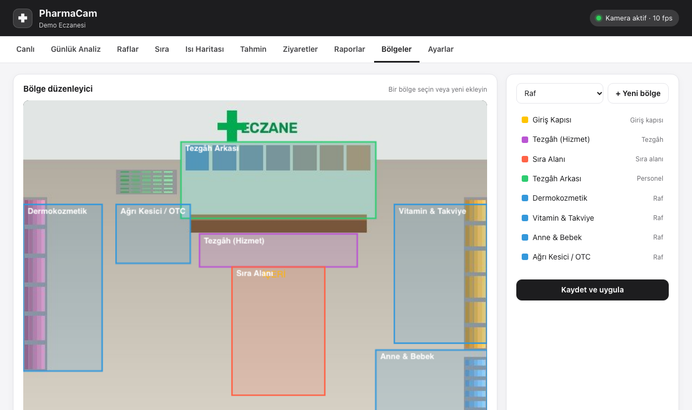
| Bölge tipi | Nasıl çizilir? | Ne için? |
|---|---|---|
| ■ Giriş kapısı | İki tıkla kapının önüne, zemin seviyesinde bir çizgi çizin. Üçüncü tıkla mağazanın iç tarafını işaretleyin. | Giren/çıkan sayımı |
| ■ Sıra alanı | Tezgâh önünde müşterilerin sıra beklediği zemini çevreleyin. | Sıra uzunluğu, bekleme |
| ■ Tezgâh (hizmet) | Tezgâhın hemen önünde, müşterinin hizmet alırken durduğu dar şerit. | Hizmet süresi |
| ■ Tezgâh arkası | Personelin çalıştığı alan. | Personel ayrımına yardım |
| ■ Raf | Rafın önündeki zemin (rafın kendisi değil). Her rafa anlamlı bir ad verin. | Durma/geçme, süre |
Panel telefon, tablet ve bilgisayarda çalışır, açık ve koyu temayı destekler. Ekranlar aşağıda sırayla anlatılmıştır.
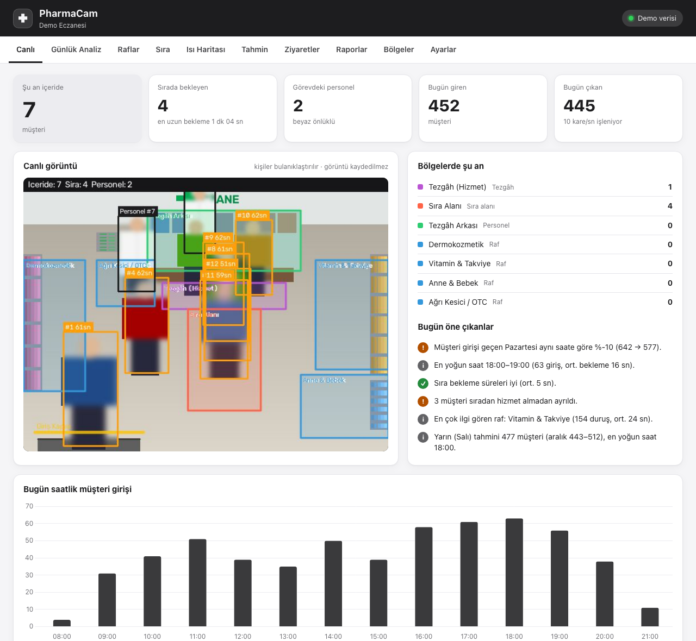
Canlı görüntüde kişiler bulanıklaştırılır ve görüntü kaydedilmez. İsterseniz Ayarlar'dan canlı görüntüyü tamamen kapatabilirsiniz; sayaçlar çalışmaya devam eder.
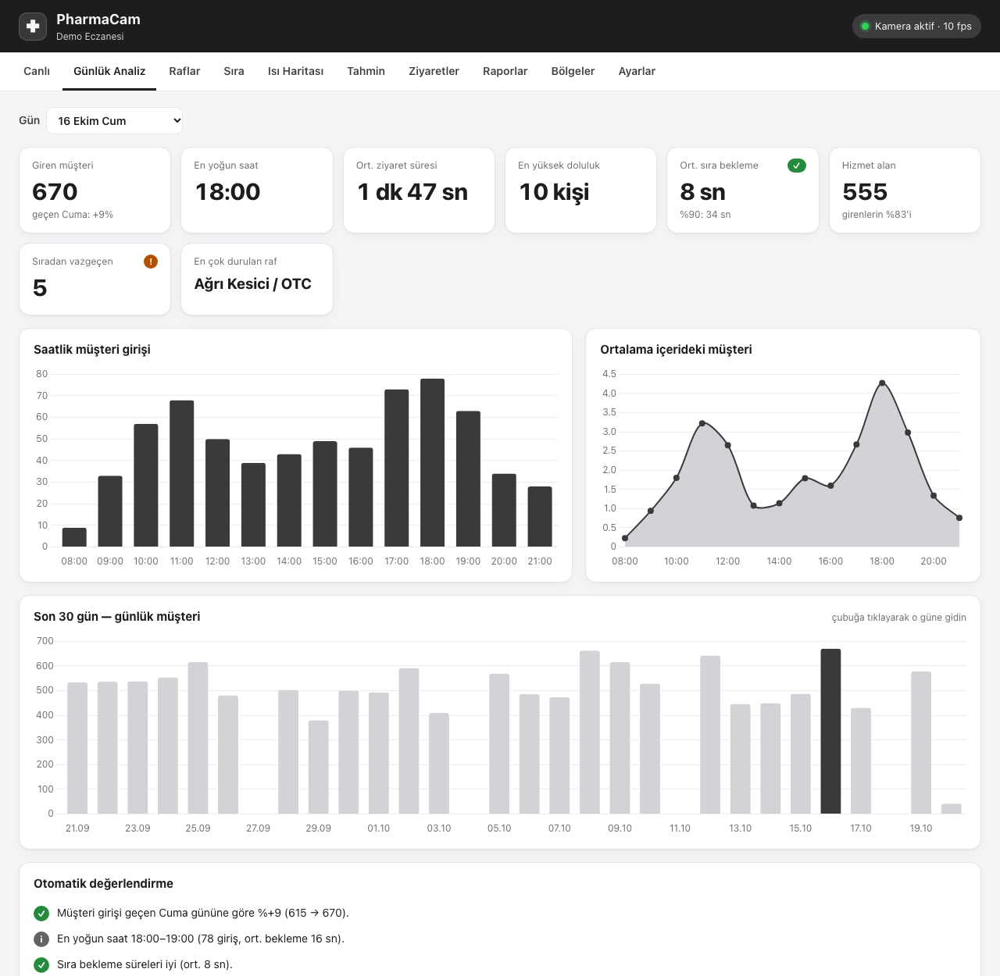
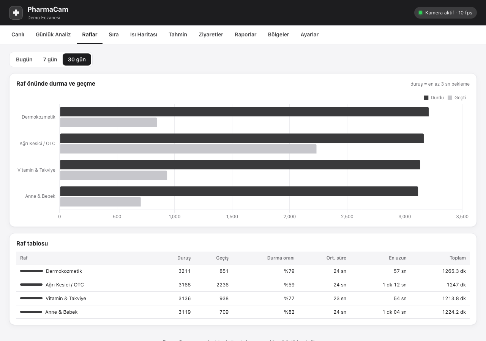
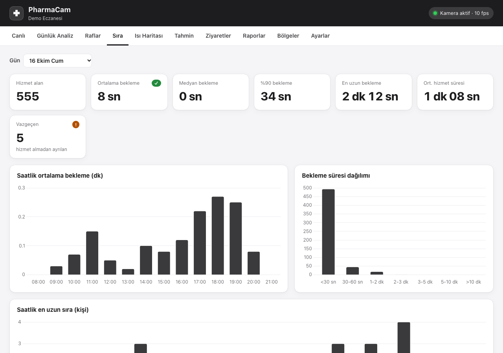
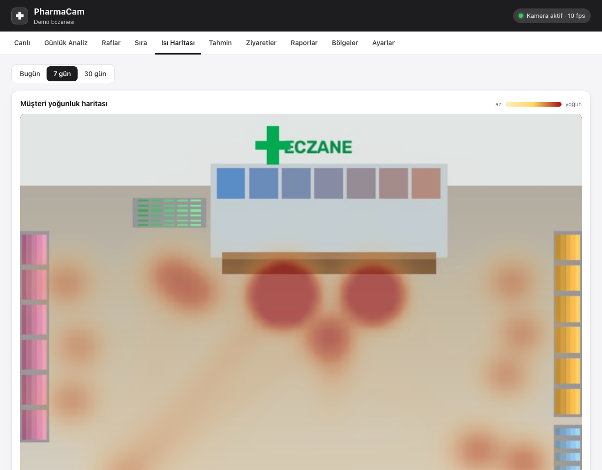
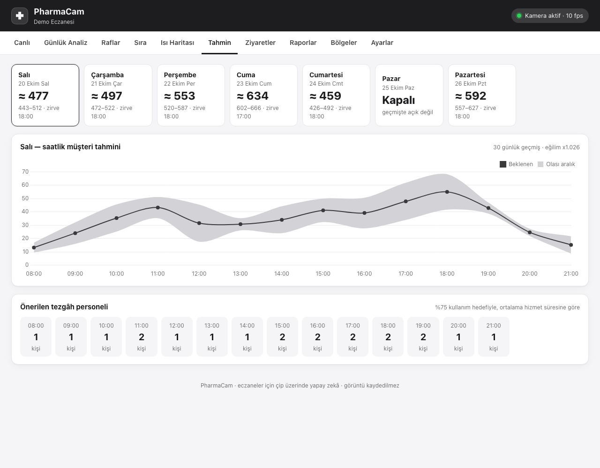
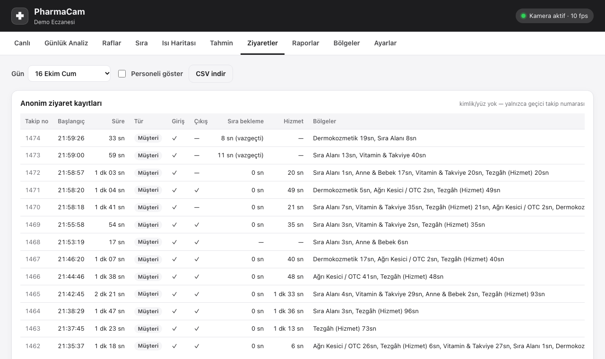
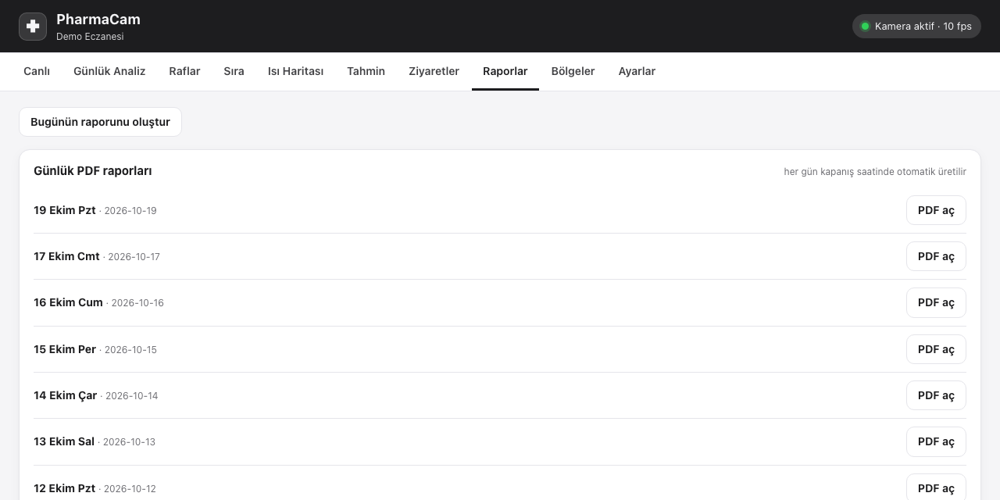
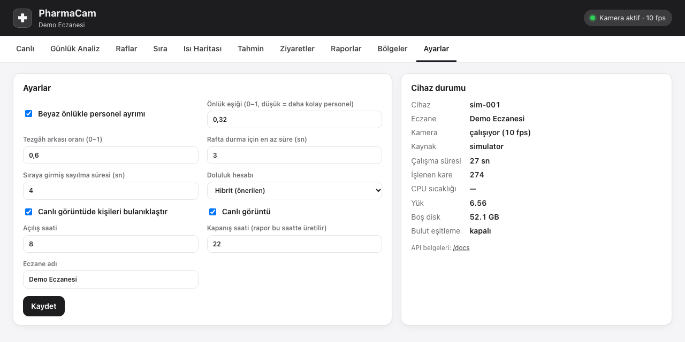
Rapor her gün reports.closing_hour saatinde (varsayılan 22:00) otomatik üretilir ve "Raporlar" sekmesinde listelenir.
Cihaz kapanış saatinde kapalıysa eksik raporlar bir sonraki açılışta tamamlanır. Bugünün raporu istendiği an "Bugünün raporunu oluştur" düğmesiyle de alınabilir.
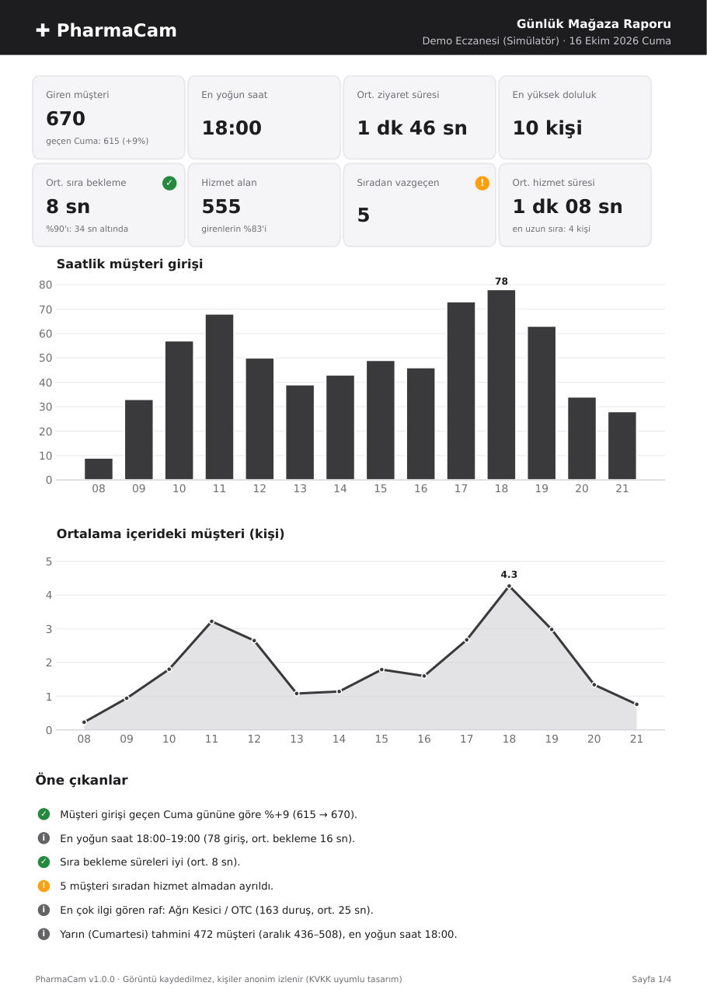
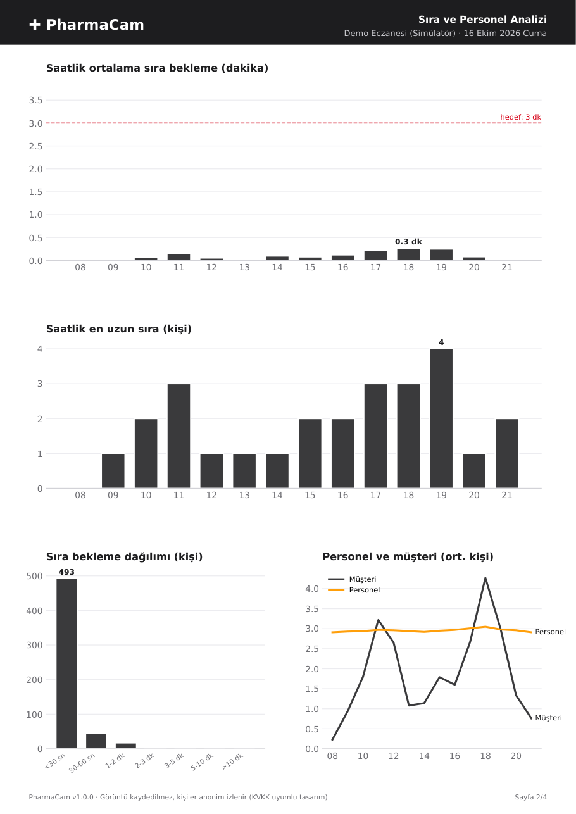
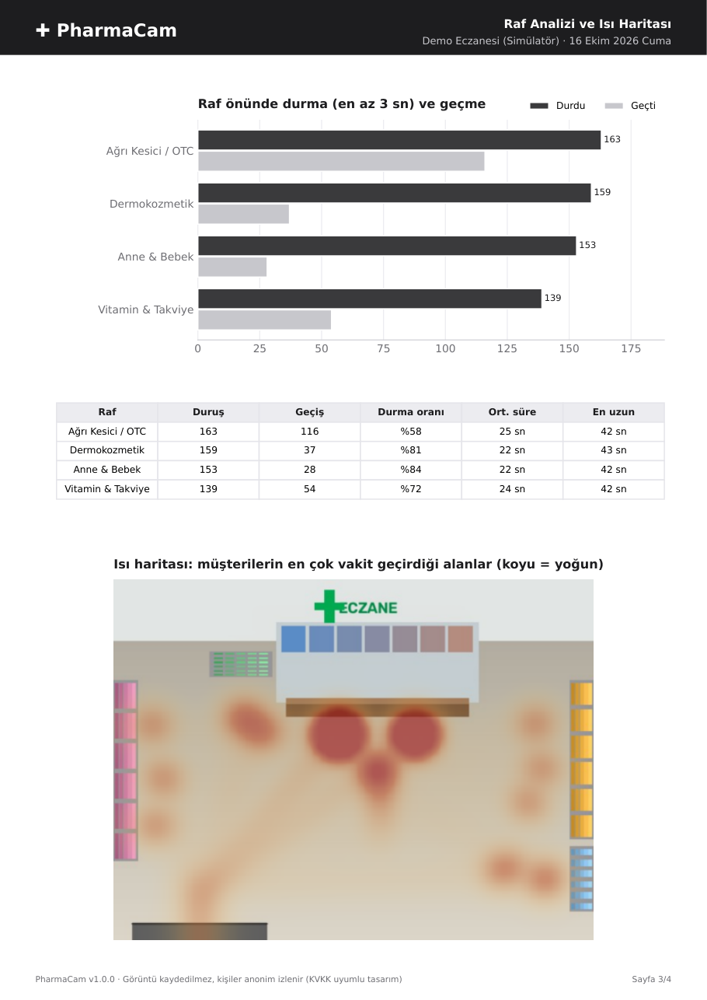
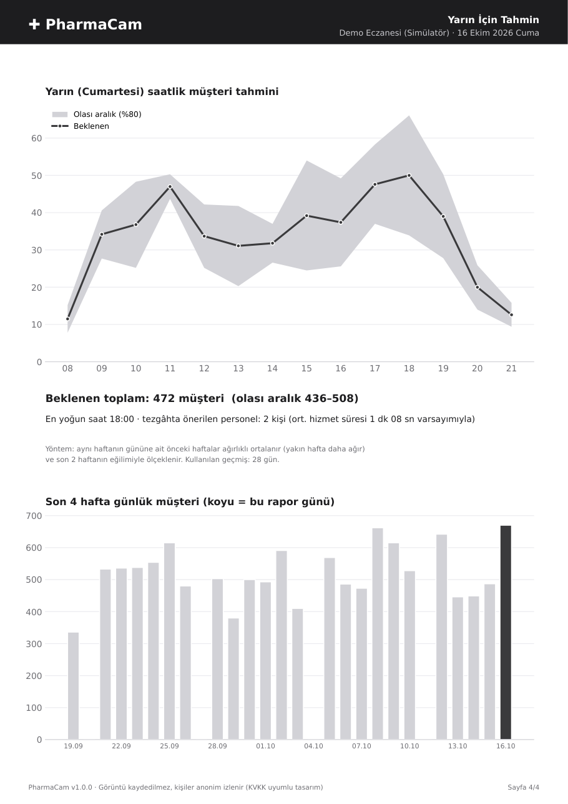
Her (haftanın günü × saat) için, aynı günün önceki haftalarındaki giriş sayıları ağırlıklı ortalanır. Her eski hafta bir yenisinin 0,75 katı ağırlık alır. Sonuç, son 14 günün uzun dönem ortalamasına oranıyla (eğilim, 0,7–1,3 aralığında) ölçeklenir. Olası aralık %80 güven bandıdır. İki haftalık geçmişte hiç açık olmayan günler (örn. Pazar) "Kapalı" görünür. Personel önerisi, beklenen saatlik müşteri ve ortalama hizmet süresiyle tezgâh kullanımını %75'in altında tutacak kişi sayısıdır.
Cihaz internetsiz de tam çalışır: tüm veriler Pi üzerindeki SQLite veritabanında tutulur (varsayılan 400 gün). Birden fazla eczaneyi tek ekrandan izlemek için PharmaCam Hub kullanılır.
Authorization: Bearer …) kimlik doğrular. Hub verileri kaydetmeden onay vermez.# sunucuda git clone https://github.com/umutcan-integrity/pharmacam.git && cd pharmacam # deploy/hub/docker-compose.yml içinde PHARMACAM_HUB_TOKENS ve şifreyi düzenleyin docker compose -f deploy/hub/docker-compose.yml up -d # panel: http://sunucu:9000 — önüne HTTPS (Caddy/nginx) koyun
# /opt/pharmacam/config/pharmacam.yaml
sync:
enabled: true
hub_url: https://hub.ornekeczane.com
device_token: "hub'da bu cihaz için tanımladığınız anahtar"
interval_seconds: 60Ardından sudo systemctl restart pharmacam komutunu çalıştırın. Ayarlar sekmesindeki "Bulut eşitleme" satırı son başarılı gönderim zamanını gösterir.
curl -fsSL https://tailscale.com/install.sh | sh && sudo tailscale up. Böylece panel yalnızca sizin cihazlarınızdan görülebilir.Panelin gösterdiği her şey REST API'den gelir. Etkileşimli belgeler cihazda http://<pi>:8080/docs adresindedir.
Kimlik doğrulama HTTP Basic'tir (panel kullanıcısı); /api/health izleme için açıktır.
| Uç nokta | Açıklama |
|---|---|
GET /api/health | Cihaz, kamera, fps, CPU sıcaklığı, disk, senkronizasyon durumu |
GET /api/live | Anlık: içerideki kişi, sıra uzunluğu ve bekleme süreleri, personel, bölge doluluğu, takip edilen kişiler |
GET /api/live.jpg · /api/live.mjpg | Kişileri bulanıklaştırılmış canlı görüntü / akış |
GET /api/stream | Server-Sent Events: saniyede bir canlı metrik |
GET /api/summary?day= | Günlük göstergeler |
GET /api/hourly?day= · /api/minutes?day= | Saatlik / dakikalık seriler |
GET /api/daily?start=&end= | Günlük seri (tarih aralığı) |
GET /api/zones/stats?start=&end= | Raf duruş/geçiş/süre istatistikleri |
GET /api/queue?day= | Sıra analizi ve bekleme dağılımı |
GET /api/heatmap?start=&end=&format=png|json | Isı haritası görseli veya normalize ızgara |
GET /api/visits?day= · /api/export/visits.csv | Anonim ziyaret kayıtları |
GET /api/forecast?days=7 | Saatlik tahmin ve personel önerisi |
GET /api/insights?day= | Otomatik Türkçe değerlendirme cümleleri |
GET /api/reports · /api/reports/{gün}.pdf · POST /api/reports/{gün} | Rapor listesi, indirme, üretme |
GET/PUT /api/config/zones | Bölgeleri oku / doğrulayarak kaydet |
GET/PATCH /api/config/settings | Panelden değiştirilebilen ayarlar (izinli liste) |
# örnek: bugünün özeti
curl -u admin:SIFRE http://pharmacam-kadikoy.local:8080/api/summary
{"day":"2026-10-16","entries":670,"busiest_hour":18,"avg_wait_s":8.0,"p90_wait_s":34.0,
"served":555,"abandoned":5,"peak_occupancy":10,"top_zone":"otc", ...}
data/pharmacam.db)| Tablo | İçerik |
|---|---|
visits | Her ziyaret: başlangıç/bitiş, süre, personel mi, kapıdan girdi/çıktı mı, sıra bekleme, hizmet süresi, vazgeçti mi, bölge süreleri (JSON) |
minutes | Dakikalık: giriş, çıkış, ortalama/maks. doluluk, sıra, personel, hizmet sayısı |
events | Olaylar: entry, exit, queue_join, served, queue_abandon, shelf_stop |
zone_hours | Saat × bölge: duruş, geçiş, toplam ve en uzun süre |
heatmaps | Saatlik 64×48 yoğunluk ızgarası (float32) |
reports | Üretilen PDF raporların yolu |
Yazılım, gerçekçi bir eczane simülatörüyle test edilir (müşteriler raflarda durur, sıraya girer, hizmet alır; beyaz önlüklü personel tezgâh arkasında çalışır ve raf düzenler). Simülatörün bildiği gerçek kapı geçişleri ile sistemin ölçtüğü değerler karşılaştırılmıştır:
| Senaryo (1 saat) | Gerçek giriş | Ölçülen giriş | Gerçek çıkış | Ölçülen çıkış |
|---|---|---|---|---|
| Sabah 09:00 (sakin) | 37 | 37 | 39 | 40 |
| Öğle 11:00 | 71 | 71 | 68 | 66 |
| Akşam 18:00 (yoğun) | 100 | 100 | 97 | 96 |
Simülasyonda tespitlerin %3'ü rastgele kaçırılır ve kutulara gürültü eklenir. Gerçek eczanede doğruluk; kamera konumuna, ışığa ve kalabalığa bağlıdır. Pilot kurulumda ilk hafta elle sayımla karşılaştırma yapılması önerilir (hedef ≥ %95).
| Belirti | Ayar |
|---|---|
| Müşteriler personel olarak görünüyor (beyaz/açık renk giysi) | "Önlük eşiği"ni yükseltin (örn. 0,32 → 0,40) |
| Personel müşteri olarak görünüyor (loş ışık, açık mavi önlük) | Eşiği düşürün (örn. 0,25) ve "Tezgâh arkası" bölgesini doğru çizin |
| Raf önünden geçenler "durdu" sayılıyor | "Rafta durma için en az süre"yi 3 → 5 sn yapın |
| Sıranın önünden geçenler sıraya girmiş sayılıyor | "Sıraya girmiş sayılma süresi"ni 3 → 5 sn yapın, sıra alanını daraltın |
| Kapı sayımı eksik | Kapı çizgisini kapıdan 0,5–1 m içeri alın; kişi çizgiden önce ve sonra görünmeli |
| Belirti | Olası neden | Çözüm |
|---|---|---|
| Panelde "Kamera bağlı değil" | Kablo gevşek/ters, kamera açılışta algılanmadı | Pi'yi kapatın, kabloyu iki uçta yeniden takın (Bölüm 3), açın. rpicam-hello --list-cameras ile doğrulayın. |
Logda Device timeout detected | Kablo teması, güç yetersizliği | Kabloyu yeniden takın; 27 W resmi adaptör kullanın. Servis takılmayı algılayıp kendini yeniden başlatır. |
| Panel açılmıyor | Servis durmuş, IP değişmiş | systemctl status pharmacam; adres için hostname -I veya <ad>.local kullanın. Modemden Pi'ye sabit IP verin. |
| Saatler yanlış | Pi'nin saati senkronize değil | timedatectl ile saat dilimini (Europe/Istanbul) ve NTP'yi kontrol edin. |
| CPU sıcaklığı > 75 °C | Soğutma yetersiz | Active Cooler takın, kasaya hava deliği açın. |
| Sayılar gece de artıyor | Işık yansıması, poster/manken | O bölgeyi kadrajdan çıkarın veya kamerayı yeniden yönlendirin. |
| Bulut eşitleme hata veriyor | Anahtar yanlış, internet yok | Ayarlar sekmesindeki hata mesajına bakın. HTTP 401 alıyorsanız anahtar yanlıştır. Veri kaybolmaz. |
# güncelleme (ayarlar ve veriler korunur) cd /opt/pharmacam && git pull && ./deploy/install.sh # veritabanı yedeği sqlite3 /opt/pharmacam/data/pharmacam.db ".backup '/home/pi/yedek-$(date +%F).db'"
PharmaCam gizlilik odaklı tasarlanmıştır:
Hizmet kalitemizi ve bekleme sürelerini iyileştirmek amacıyla, yapay zekâ destekli bir sensör yalnızca kişi sayısı ve bekleme süresi gibi anonim istatistikler üretir. Görüntü kaydedilmez, yüz tanıma yapılmaz, kişisel veri saklanmaz.
Veri sorumlusu: ………… Eczanesi · Adres: ………… · İletişim: …………
6698 sayılı KVKK kapsamındaki haklarınız için bizimle iletişime geçebilirsiniz.
Dosya: /opt/pharmacam/config/pharmacam.yaml. Değişiklikten sonra sudo systemctl restart pharmacam komutunu çalıştırın.
Bölgeler ve işaretli (●) ayarlar panelden değiştirilebilir, yeniden başlatma gerektirmez.
| Anahtar | Varsayılan | Açıklama |
|---|---|---|
device.id | seri no. | Benzersiz cihaz kimliği (hub'da kullanılır) |
device.pharmacy_name ● | — | Panel ve raporlarda görünen ad |
camera.model | SSD MobileNetV2 | /usr/share/imx500-models içindeki bir nesne tespit modeli (.rpk) |
camera.width / height / fps | 1280 / 960 / 15 | İşlenen görüntü boyutu ve kare hızı |
camera.score_threshold | 0.45 | Kişi tespiti için en düşük güven |
camera.hflip / vflip | false | Ters montaj için görüntüyü çevir |
camera.watchdog_seconds | 15 | Kare gelmezse servisin kendini yeniden başlatma süresi |
tracker.max_lost_seconds | 2.0 | Görünmeyen kişinin takibinin bitme süresi |
staff.white_ratio_threshold ● | 0.32 | Önlük eşiği |
staff.staff_zone_ratio ● | 0.6 | Zamanının bu oranı tezgâh arkasında geçen kişi personeldir |
analytics.occupancy_mode ● | hybrid | visible: yalnız görünen, counter: kapı sayacı, hybrid: ikisinin büyüğü |
analytics.min_zone_dwell_seconds ● | 3 | Rafta "durdu" sayılma süresi |
analytics.min_queue_seconds ● | 3 | Sıraya girmiş sayılma süresi |
analytics.empty_reset_seconds | 90 | Mağaza boş görünürse sayaç sıfırlama süresi |
storage.retention_days | 400 | Verilerin saklanacağı gün sayısı |
server.port / username / password | 8080 / admin / rastgele | Panel adresi ve girişi |
server.live_view ● · server.blur_people ● | true · true | Canlı görüntü ve bulanıklaştırma |
reports.opening_hour / closing_hour ● | 8 / 22 | Grafik aralığı ve otomatik rapor saati |
sync.* | kapalı | Hub adresi, cihaz anahtarı, gönderim aralığı (Bölüm 10) |
PharmaCam v1.0 · Kaynak kod: github.com/umutcan-integrity/pharmacam · Bu kılavuz depodaki docs/kilavuz.html dosyasından üretilir.